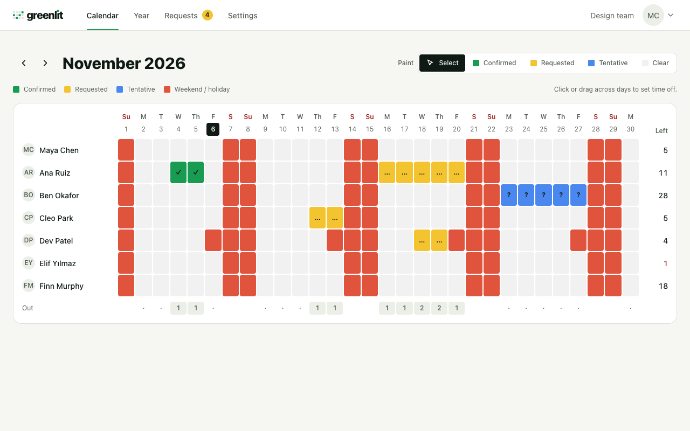
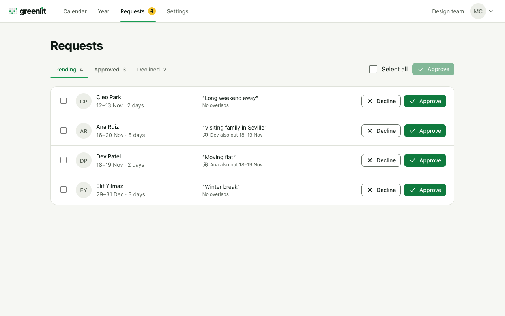
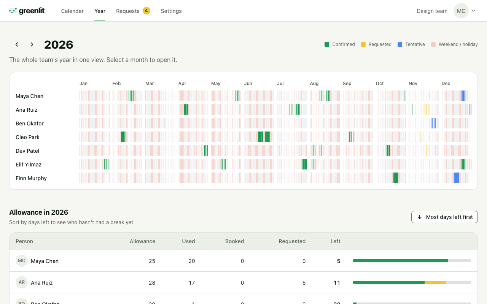
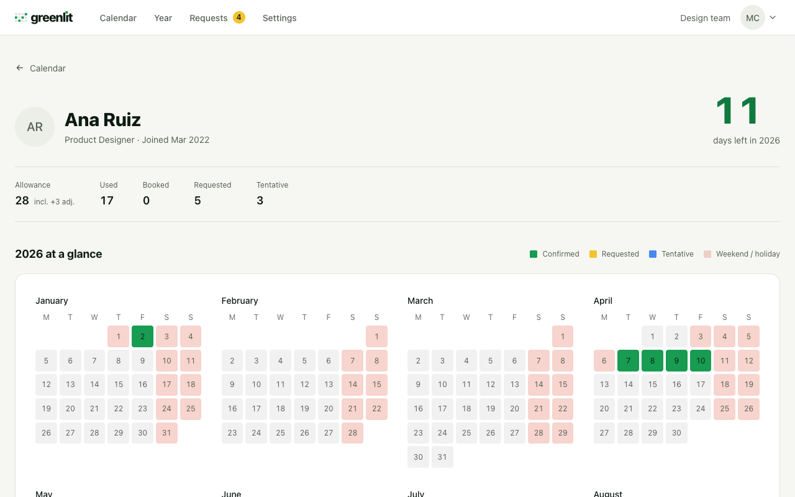

One month, one truth
Everyone sees the same month, with a count of who is out each day.
Greenlit is the vacation sheet your team already keeps, made simple. Members colour their own days, you confirm with a tap, and everyone sees the same month.
Built for teams of under ten · Invite-only
Same sheet, same colours. Nobody has to fix a formula, ask who changed a cell or wonder which tab is current.
Everyone sees the same month, with a count of who is out each day.
Click, drag or use the keyboard. Every change can be undone.
Requests wait for you, with the overlaps in view.
One routine for everyone on the team. No balances to chase, no emails to dig up.
Mark days blue while you are still deciding.
Turn them yellow, add a note, and your manager is asked.
Your manager confirms, and the days turn green for everyone.
Real screens from the app, on a phone or a desktop.

Members down the side, days across the top.

Approve or decline, one at a time or in bulk.

The whole team, month by month.

Their year at a glance, past and upcoming time off.
You know who is out, who is waiting on you and where the team runs thin. Greenlit just says it out loud.
Set up your team, invite the people you work with, and share the same month.